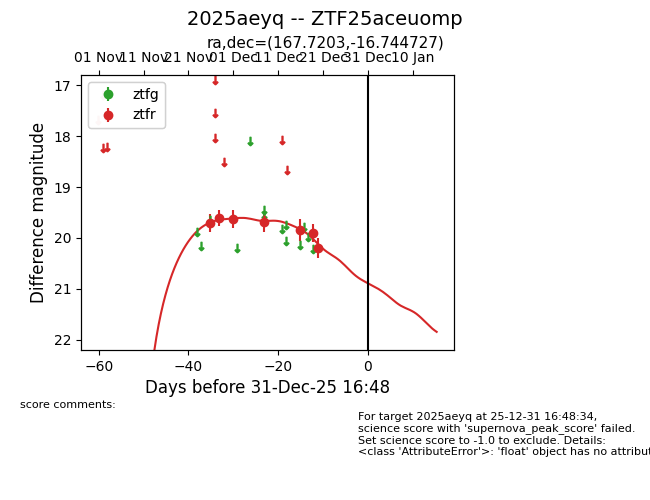
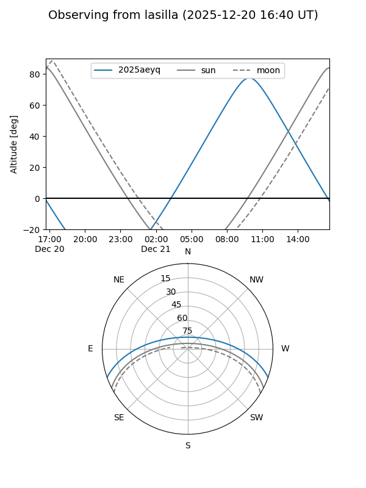
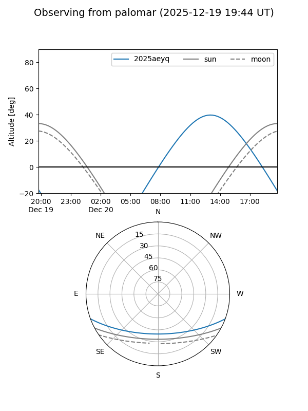
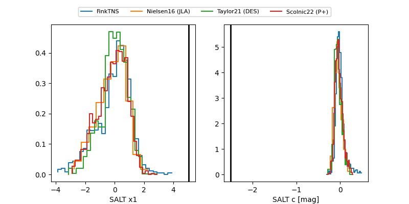

2025aeyq
Target 2025aeyq at 2025-12-31 17:59
Aliases and brokers:
FINK: link
Lasair: link
ALeRCE: link
TNS: link
YSE: link
alt names
ZTF25aceuomp (ztf,fink_ztf)
2025aeyq (tns,yse)
Coordinates:
equatorial (ra, dec) = 167.7203,-16.74473
equatorial (HMS+DMS) = 11:10:52.87,-16:44:41.02
galactic (l, b) = (270.9587,+39.80312)
Flags:
Photometry:
last ztfr=20.20
7 ztfr detections
Lightcurve

Visibility


Additional plots
